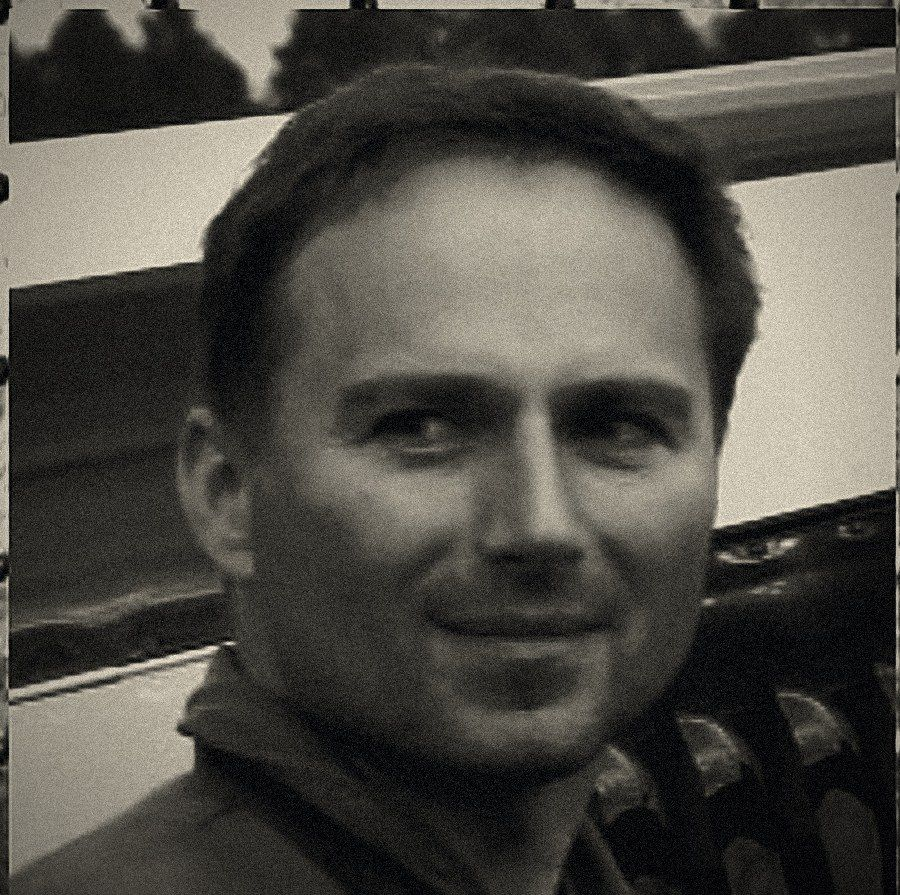

01
VEDOUCÍ
KARTA PILOTA / 01 — STROJ: OK-KNR
Tomáš
Vedoucí formace — číslo jedna, navigace, komunikace, velení formace.
NAROZEN1970
VÝŠKA180 CM
VÁHA77 KG
NÁLET (H)≈8 700
Za knipl usedl poprvé ve čtrnácti na Blaníku. Dnes svoje účty platí jako kapitán-examinátor u dopravní společnosti, v malých strojích nalétá zhruba 50 hodin ročně. V sestavě drží vedení, navigaci a komunikaci — jeho jediným cílem je létat tak čistě, aby na zádech kombinézy nezůstal otisk dvojky, která mu sedí za zády.
OK-KNR — ZLIN Z-226MS
žlutý s černou kostkou, stejnou, jakou nosí i vozy s nápisem „Follow me“